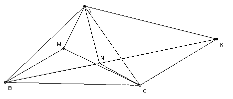

M and N are points inside the triangle ABC such that ∠MAB = ∠NAC and ∠MBA = ∠NBC. Show that AM·AN/(AB·AC) + BM·BN/(BA·BC) + CM·CN/(CA·CB) = 1.
Solution

Take K on the ray BN so that ∠BCK = ∠BMA. Then triangles BMA and BCK are similar. So AB/BK = BM/BC = AM/CK. Hence also triangles ABK and MBC are similar. So AB/BM = BK/BC = AK/CM. ∠CKN = ∠MAB = ∠NAC, so ANCK is cyclic.
Ptolemy's theorem gives AC·NK = AN·CK + CN·AK or AC(BK - BN) = AN·CK + CN·AK. But we already have CK = AM·BC/BM, AK = AB·CM/BM, BK = AB·BC/BM. Hence AC(AB·BC/BM - BN) = AN·AM·BC/BM + CN·AB·CM/BM. Hence AM·AN/(AB·BC) + BM·BN/(BA·BC) + CM·CN/(CA·CB) = 1.

© John Scholes
jscholes@kalva.demon.co.uk
30 Aug 2002